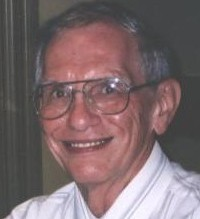
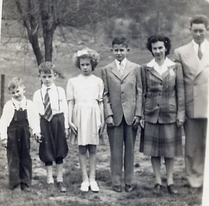
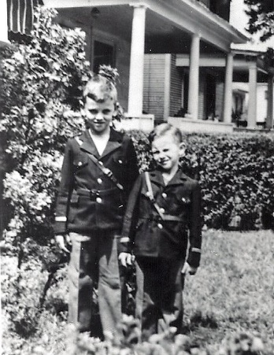
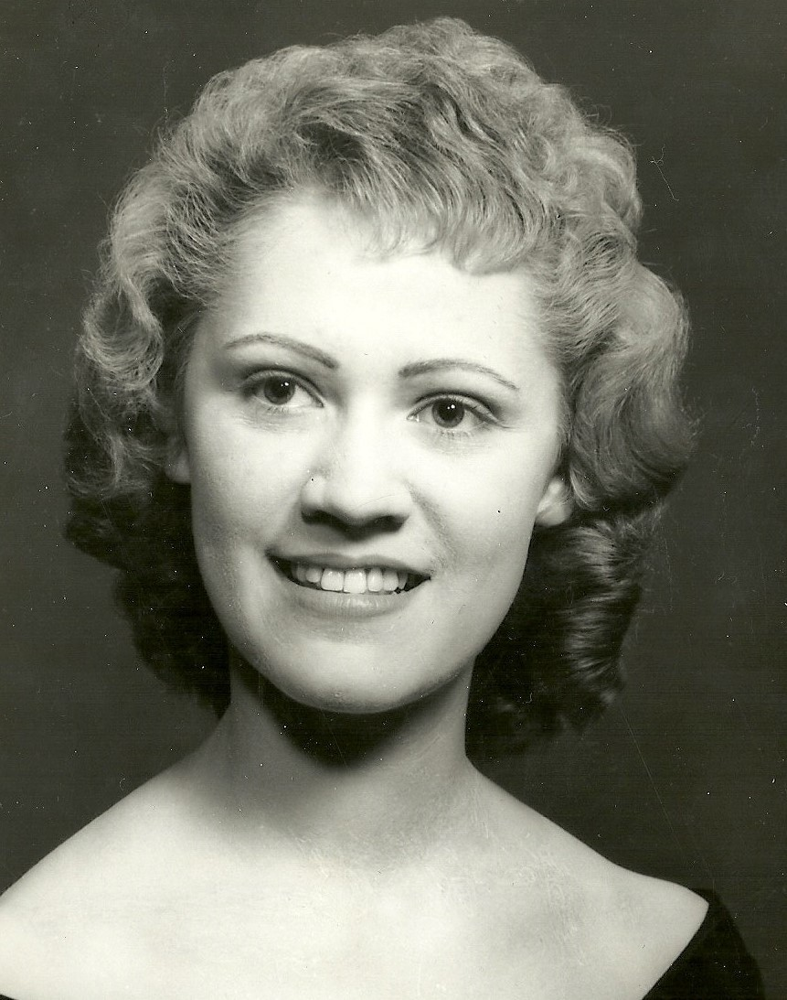
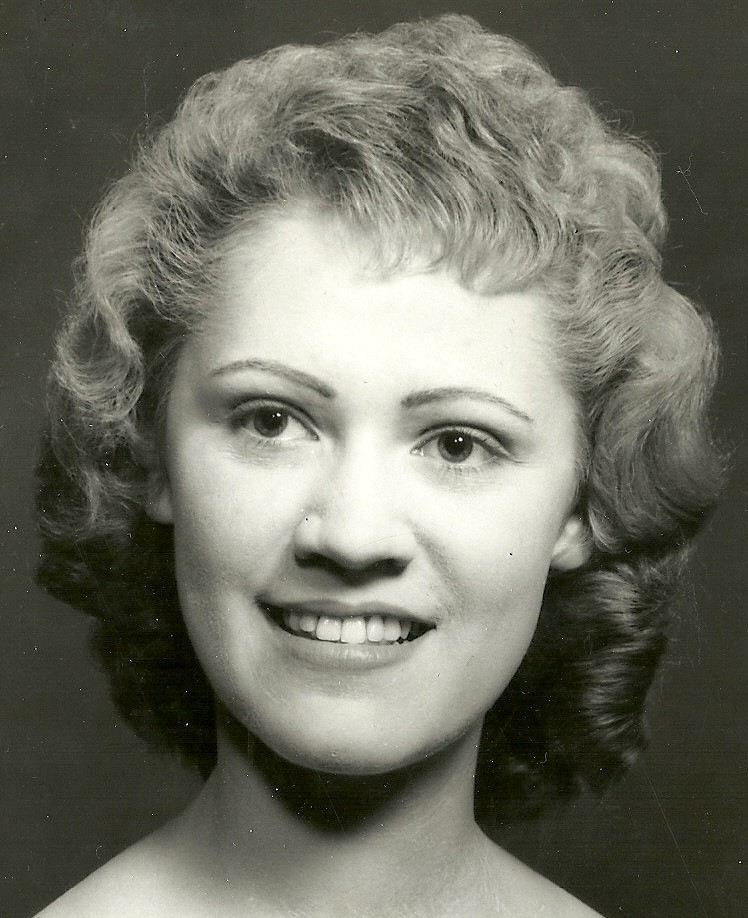
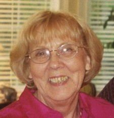
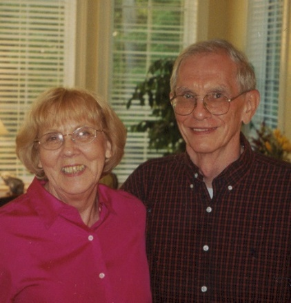
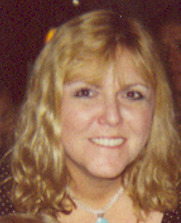

Clifford Earl Shamblen
Born 27 January 1938, Fairplain, West Virginia
Quick Facts
Marjorie Farmer Pilman ("Marge"; 1932–2020) SUPPORTED — married 2011, Cincinnati
Immediate Family
Spouses
Lois Geraldine Barnes ("Gerry"; b. 17 March 1938, Cincinnati; d. 9 March 2011, Cincinnati) SUPPORTED — married 26 July 1958, CincinnatiMarjorie Farmer Pilman ("Marge"; b. 23 August 1932, McKee, Kentucky; d. 23 February 2020, Cincinnati) SUPPORTED — married 2011, Cincinnati
Children
Sandra Sue Metzgar (b. 30 June 1959, Cincinnati) SUPPORTED — husband Douglas Craig Hoshizaki; son Kevin C. HoshizakiSharon Lee Feltner (b. 29 August 1960, Cincinnati) SUPPORTED — husbands Danny Adams and Dennis Patrick Feltner; children Sally Marie Laker and Adam Patrick Feltner
Stephen Richard Shamblen, PhD (b. 6 February 1972, Cincinnati) SUPPORTED — wife Jacquelyn Marie Shamblen; sons Wesley and Lane
Stepchildren
Michael Pilman (Cincinnati) SUPPORTED — wife Michelle PilmanKimberly Burrous (d. 2020) SUPPORTED — husband Matthew Burrous; children Michael and Nicole Burrous
Siblings
- Lawrence Richard Shamblen (1932–1968)
- Betty Carolyn Shircliff (b. 1934)
- Lowell Harold Shamblen (b. 1935)
On Family Tree Sites
Research Folder
Life Timeline
1938 · age 0
Born, Fairplain, Jackson Co., WV SUPPORTED
1953–56 · age 15–18
West Charleston schools SUPPORTED
1956–65 · age 18–27
University of Cincinnati (Co-Op, then Evening College) SUPPORTED
1958 · age 20
Married Lois Geraldine Barnes, Cincinnati SUPPORTED
1959 · age 21
Daughter Sandra born, Cincinnati SUPPORTED
1960 · age 22
Daughter Sharon born, Cincinnati SUPPORTED
1966–70 · age 28–32
University of Cincinnati, MS Engineering SUPPORTED
1972 · age 34
Son Stephen born, Cincinnati SUPPORTED
2011 · age 73
Married Marjorie Farmer Pilman, Cincinnati SUPPORTED
Life Story
Clifford Earl Shamblen was born January 27, 1938, in Fairplain, Jackson County, West Virginia, the youngest child of Arvel Lawrence Shamblin and Georgia Mae Fisher. He grew up in Fairplain, then Sissonsville and Charleston, and went to school in West Charleston.
He spent two years in the University of Cincinnati Co-Op program, then earned his BS in Metallurgical Engineering in 1965 and his MS in Engineering in 1970 through UC Evening College. He worked at Metcut Research, then at GE Aircraft Engines, where he was an engineer, briefly a manager, and then a project manager. His work was nickel and titanium alloy development; he became GE's titanium expert, helped develop and introduce the hearth melt process, helped form the international Jet Engine Titanium Quality Committee, and coauthored many GE patents, mostly on titanium. SUPPORTED
He married Lois Geraldine Barnes — "Gerry" — on July 26, 1958, in Cincinnati; his brother Richard was best man. Their children were Sandra, Sharon, and Stephen. After Lois died in 2011, he married Marjorie Farmer Pilman — "Marge" — in 2011 in Cincinnati. He retired from GE and still gets titanium calls.
Cliff would one day write it all down — and he did. His autobiography is linked below.
Cliff's Autobiography
Clifford Earl Shamblen wrote his own life story. Read it in his own words: Clifford Earl Shamblen — My Autobiography (original).
Photo Gallery










Sources and Evidence
- Geni, read 2026-11-03: Clifford Earl Shamblen profile, including his own About account of his schooling and GE career, spouses, children, and stepchildren SUPPORTED
- FamilySearch, read 2026-11-03: Clifford Shamblen, PN3J-R3R, birth 27 January 1938, Fairplain SUPPORTED
- WikiTree: Clifford Shamblin-436, son of Arvel Shamblin-435 and Georgia Fisher-24678 SUPPORTED
- Ancestry, Rick's Brewster Family Tree: Clifford Earl Shamblen, 162817238029 SUPPORTED
- 1940 census, Ripley District, Jackson County, West Virginia (household of Arvel and Georgia) SUPPORTED
- Clifford Earl Shamblen, My Autobiography (original) FAMILY ACCOUNT
- Lawrence × Ruth couple profile: Richard was best man at Cliff and Gerry's wedding, June 1958 FAMILY ACCOUNT
Grades: DOCUMENTED an original record says it · SUPPORTED several records point to it · FAMILY ACCOUNT the family's own telling · UNPROVED a lead, not proved.
Research Notes and Open Questions
- FamilySearch heads the profile only "Clifford Shamblen" — "Earl" is not shown as a middle name in the name field there.
- FamilySearch shows Clifford as Living with no spouse or children listed; the living flags and the empty spouse/child fields were left untouched, and no death is inferred.
- Marjorie Farmer Pilman was also the wife of Thomas Charles Pilman, per Geni.
DNA
No DNA matches linked yet.
Profile history: Created 3 November 2026 from Geni, Ancestry, WikiTree, and FamilySearch profiles and family notes.